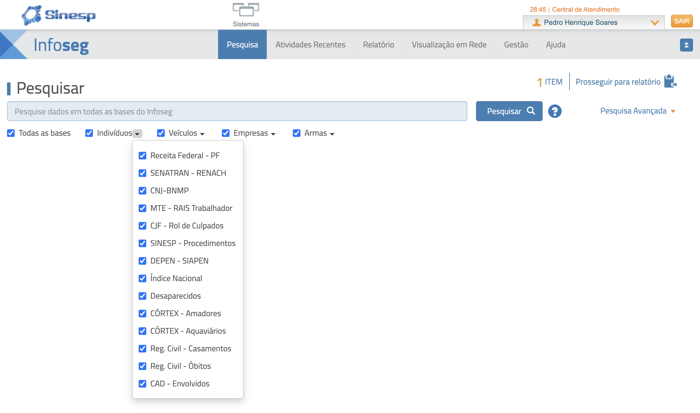

Consulta integrada de bases de dados
INTELIGÊNCIA

A partir de uma única consulta, o fiscal acessa diversas bases integradas de órgãos federais, apoiando a identificação de pessoas e a avaliação de riscos em campo.
Bases consultadas (exemplos)
Trilha Técnica da Fiscalização · SFC / GPF — ANTAQ
51 / 61